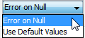
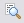

Test Project editor
The Test Project editor enables the user to run a test project. The user can set up the conditions to run large amounts of test data through a component using this editor.
The Test Project editor displays the name of the component for which the test project is being performed. The user selects the input data (an Input Data Connection component, which can include CSV formatted data or a database table) and specifies where the results will be stored and, optionally, what results will be captured. Results are always written to a CSV file. A history of each test project run is displayed, and the results can be viewed in the tabs at the bottom of the Test Project editor.
The Test Project editor consists of the following fields:
Component and Revision - Displays the component, and its revision, to be tested. These fields are not editable.
Input Data Connection - Specifies a data source to be used when running tests on the specified components. Drag the required Input Data Connection from the list of Input Data Connection components in the resource palette onto the Input Data Field.
Results Data Folder - Specify the data directory location for the test results. Click on the select button  to select the results directory location.
to select the results directory location.
| If no directory is specified, the results are stored by default in a folder created in the root directory (e.g, the C: drive). The name of the folder will be the same as the name listed in the Run History table. |
Results Definition - (Optional.) Specify a referenced or embedded Results Data Definition component, if desired. This allows users to control which characteristics are written to the results CSV file. If the field is left blank, the results output file will include only the characteristics from the input data source that are used by the component in the test.
Null Handling
The options available within the Null Handling area are dependent on the component that is being tested and the studio being used.
| SDS | |
|---|---|
| Simple component |  Default - Error on Null |
| Decision Process Flow |
Default - Error on Null |
- Error on Null - (Default setting) When this option is selected and a null is found in the data, an error will be produced by the Decision Agent for every record where the null is present.
- Use Default Value - When this option is selected and a null is found in the data, the system's default values will be used. The system's default values are:
- for numerics - 0
- for strings - empty string ("")
- for dates - 01/01/1970
Test Run Setup:
| The Test area with the Trace buttons and the Profile radio button and settings are disabled when testing Business Process Flows. |
The selected radio button will impact the options available within the Test Run Setup area
Test
To activate the Trace buttons and the trace capability, the Test radio button needs to be selected. The three Trace buttons control test tracing levels for each test processed. A trace log is saved, and can be viewed from the Trace tab.
 Trace Pathways - Select to produce a trace pathway for each test input case that is passed through the component within the scope of the test.
Trace Pathways - Select to produce a trace pathway for each test input case that is passed through the component within the scope of the test.

Trace Characteristics Writes - Select to produce a trace value of the selected characteristics each time they are written to during the test.
First - Limit the trace to the first X records of the data set.
Notes - Lets the user provide a description for each run.
Profile
To activate the Profile settings, the Profile radio button needs to be selected. The Profile area enables the user to set performance profiles for the execution of Decision Process Flows within the Test Project. The user can enter a value for the:
- number of times to execute each record during the warm up phase. This will ensure that all objects and components used by the strategy being profiled will have been executed at least once. The default value is 1.
- number of times to execute each record during the profiler phase. The profiled records will be multiplied by the number entered. This can be used to increase the size of the data file to a more representative sample of the live environment. The default value is 1.
The performance profile includes the time taken to run the test data through the flow, and what percentage of the total time was taken to run through each process in the flow. For more information refer to the Create performance profiles in Test Project topic.
Run History:
The Run History provides a one-row history for each run. Initially blank, until the first job is submitted.
- #: The sequential number of the run in this test project.
- Name: The name is supplied by the system when the Execute Test button
 is clicked (Run_1, Run_2, etc.). This name also serves as the name of the folder created by the system to store the result files in once the test is completed.
is clicked (Run_1, Run_2, etc.). This name also serves as the name of the folder created by the system to store the result files in once the test is completed. - Revision: The tested component revision number.
- Status: Submitted (once the Execute Test button is clicked), Completed or Failed.
- Start and End: Date and time the test execution begins and ends.
- Notes: Entered from the Notes field above.

{kind=link}
{kind=link}
{kind=link}
{kind=link}
Test Results:
Results are displayed under the:
The Summary Results tab in the Test Project editor displays the results of the test. A link to the results file (results.txt) is displayed at the top of the tab window; click on the link to open the results text file in a new window.
The results text file is stored in the Results folder specified in the Test Project editor.
A sample of a results file is displayed below:
{kind=link}
How the results of an actual test are displayed depends on the component being tested.
| The Trace buttons are disabled when testing Business Process Flows. |
The Trace tab in the Test Project editor displays the tracing information recorded for the selected trace options. A link to the actual trace file is displayed above the tracing information; click on the link to open the trace log text file in a new window.
When a user creates and runs a test project, the Test Project editor allows the user to create a trace file that provides added details about the characteristics used for each test that is run.
The user can click on one or all of the trace icons to produce a trace file that can detail the pathway each test case takes through the component, and the value of selected characteristics each time they are read or written to.
{kind=link}
Once the test has been run a trace text file (trace.txt) is created and the contents are displayed under the Trace tab. The actual trace text file is stored in the Results folder specified in the Test Project editor.
There are three types of trace that can be run, in any combination. The following are examples of the different types of information produced by the various traces.
Clicking on the Trace Pathways button produces details about the pathway the test case takes through the component:
{kind=link}
Clicking on the Trace Characteristics Reads button produces details about the characteristics values that are read during the test:
{kind=link}
Clicking on the Trace Characteristics Writes button produces details about the characteristics values that are written as a result of the test:
{kind=link}
The trace buttons can be used in any combination.
The Log tab in the Test Project editor displays a log of messages and errors for the test. A link to the actual log file is displayed above the log information; click on the link to open the log text file in a new window.
The log text file is stored in the Results folder specified in the Test Project editor.